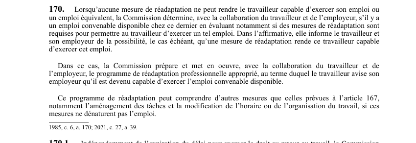

art-170-LATMP : emploi convenable disponible chez l'employeur
Prend le relais lorsque AUCUNE mesure de réadaptation ne peut rendre le travailleur capable d'exercer son emploi ou un emploi équivalent.
- La CNESST détermine alors, avec la collaboration du travailleur et de l'employeur, s'il existe un emploi convenable disponible chez cet employeur.
- Elle évalue notamment si des mesures de réadaptation sont requises pour permettre d'exercer un tel emploi et, dans l'affirmative, en informe le travailleur et l'employeur.
- Elle prépare et met en oeuvre le programme de réadaptation professionnelle approprié; au terme, le travailleur avise son employeur qu'il est devenu capable d'exercer cet emploi convenable disponible.
- Ce programme peut aller au-delà des mesures de art. 167 : aménagement des tâches, modification de l'horaire ou de l'organisation du travail, pourvu qu'elles ne dénaturent pas l'emploi.
🌐 LegisQuébec · 📄 PDF officiel (page 45)
Texte officiel
Lorsqu’aucune mesure de réadaptation ne peut rendre le travailleur capable d’exercer son emploi ou un emploi équivalent, la Commission détermine, avec la collaboration du travailleur et de l’employeur, s’il y a un emploi convenable disponible chez ce dernier en évaluant notamment si des mesures de réadaptation sont requises pour permettre au travailleur d’exercer un tel emploi. Dans l’affirmative, elle informe le travailleur et son employeur de la possibilité, le cas échéant, qu’une mesure de réadaptation rende ce travailleur capable d’exercer cet emploi.
Dans ce cas, la Commission prépare et met en oeuvre, avec la collaboration du travailleur et de l’employeur, le programme de réadaptation professionnelle approprié, au terme duquel le travailleur avise son employeur qu’il est devenu capable d’exercer l’emploi convenable disponible.
Ce programme de réadaptation peut comprendre d’autres mesures que celles prévues à l’article 167, notamment l’aménagement des tâches et la modification de l’horaire ou de l’organisation du travail, si ces mesures ne dénaturent pas l’emploi.
Texte de l’article 170 LATMP, extrait de la couche texte du PDF officiel (page 45), sans OCR ni retouche. La capture ci-dessous et le PDF font foi.
{kind=link}

Toucher l'image pour l'agrandir🔗 Ouvrir a cette page : LATMP.pdf : page 45 · texte a jour au 20 février 2024
Voir aussi
- 🔢 Sous-article : art. 170.1 · faculté : indépendamment de expiration du délai pour exercer le droit au retour au travail, la Commission peut exiger de l'employeur, d'un représentant en santé et en sécurité au sens de la Loi sur la santé et la sécurité du travail (chapitre S-2.1).
- 🔢 Sous-article : art. 170.2 · obligation : l'employeur doit, sous réserve de la démonstration d'une contrainte excessive, collaborer à la mise en œuvre des mesures de réadaptation qui doivent être réalisées dans son établissement.
- 🔢 Sous-article : art. 170.3 · présomption : l'employeur est réputé pouvoir réintégrer le travailleur dès qu'il redevient capable d'exercer son emploi, un emploi équivalent ou un emploi convenable disponible, avant l'expiration du délai du droit au retour.
- 🔢 Sous-article : art. 170.4 · faculté : 4, La Commission peut ordonner a un employeur qui refuse de se conformer aux obligations prévues aux articles 170.1 et 170.2 ou de réintégrer un travailleur malgré une décision qui établit sa capacité a occuper son emploi, un emploi équivalent ou un emploi convenable.
- 🔧 Modifié par : LMRSST art. 39, LMRSST art. 40
- ↑ Loi : LATMP
Pages qui pointent ici (11)
- art-169-LATMP : réadaptation en cas de limitation fonctionnelle Recueil législatif
- art-171-LATMP : évaluation des possibilités professionnelles Recueil législatif
- art-39-LMRSST : modifie l'art. 170 LATMP Recueil législatif
- art-40-LMRSST : insertion après art. 170 LATMP Recueil législatif
- art-7-LATMP : application territoriale de la loi au Québec Recueil législatif
- art-8-LATMP : accident travail Recueil législatif
- art-8.2-LATMP : exclusion des règles pour le travailleur domestique Recueil législatif
- art-8.3-LATMP : travailleur domestique : logement assimilé à un établissement Recueil législatif
- art-9-LATMP : travailleur autonome assimilé à un travailleur Recueil législatif
- Délais clés en SST québécoise Recueil législatif
- LMRSST : Chapitre I : Modifications à la LATMP Recueil législatif